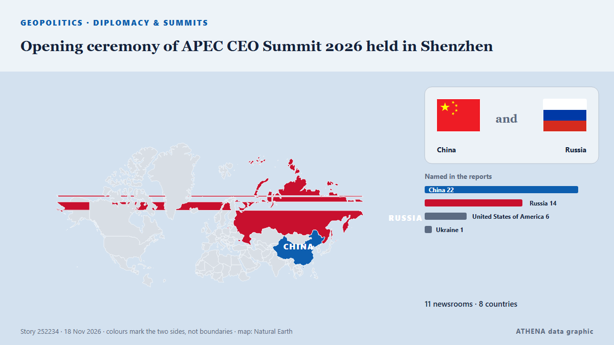

ATHENA Glaux Intelligence — Global news intelligence — every number explained
Every headline, checked across countries.
ATHENA Glaux reads 635 news outlets worldwide. A story becomes a verified event only when independent outlets report it. Each event shows who was first and a risk score with its reasons.
Reports drift in from independent outlets - when two meet on the same story, it becomes a verified event.
How ATHENA checks a story
- CollectReports arrive from independent outlets in many countries.
- MatchWhen two outlets meet on the same story, it becomes a verified event.
- ExplainEach event shows who was first, how far it spread and why the risk is what it is.

GeopoliticsOpening ceremony of APEC CEO Summit 2026 held in Shenzhen
The Asia-Pacific Economic Cooperation (APEC) CEO Summit 2026 opened Tuesday in Shenzhen, south China's Guangdong Province, bringing together business and political leaders from across the… from CGTN (China)
Asian chip stocks rebound after Nvidia earnings beat expectations
South Korea's Kospi gains nearly 2% as SK Hynix, Samsung advance, while broader regional markets finish mixed. from Anadolu Agency (English)
Trump warns Iran over report of ‘dirty bomb’ plot
President Trump warned the Iranian regime after a report that Iran was planning a ‘dirty bomb’ attack in Washington. from NBC News (World)

Ships at the world's chokepoints now
Live AIS counts. Tap or hover a bar for the detail.
Israel elects new parliament speaker in blow to Netanyahu
Israel’s parliament voted on Tuesday to select a new speaker opposed to the agenda of Benjamin Netanyahu, a potential first step in rolling back the prime minister’s divisive political agenda even as… from Cyprus Mail
Xi and Putin meet at APEC summit ahead of trilateral talks with Trump
Chinese President Xi Jinping and Russian President Vladimir Putin met on Wednesday in Shenzhen, China, on the sidelines of the APEC summit. from Africanews (English)
Ukraine’s attack on Kerch Bridge is a major blow to Putin and Russia’s control of Crimea
The Kerch Bridge connecting Crimea and Russia is crucial for Moscow, both logistically and symbolically. from The Independent
Geopolitics, Politics & Security
More ›Trump 'serious' about engaging with N. Korean leader Kim: Rubio
U.S. President Donald Trump is "serious" about seeking dialogue with North Korean leader Kim Jong-un, U.S. from The Korea Times
- Diplomacy & summits
Pakistani Man Sentenced to 27 Years in US Prison over Iran-Backed Plot to Kill Trump
- Defence & national security
Germany, UK push back after US criticizes Ukraine's deep strikes into Russia
- Intelligence & espionage
Widespread outages hit banks, air travel, the NSA and Apple, disrupting seemingly everything
- Diplomacy & summits
Ireland shouldn't give €25m to Ukraine when its electricity is 75% cheaper- Independent Ireland
Economics, Finance & Markets
More ›Bombay High Court quashes ICICI Bank’s nod to prosecute ex-CEO Chanda Kochhar in ‘loan fraud’ case
Mumbai: The Bombay High Court on Wednesday quashed ICICI Bank’s sanction to prosecute its former CEO Chanda Kochhar in a case involving alleged irregularities in loans provided to the Venugopal… from Deccan Herald
- Stocks, bonds & markets
Anthropic likely to price IPO above the current range of $70 to $78, sources tell CNBC
- Banking & credit
European Commission proposes up to $49B in new loan package for Ukraine in 2027
- Banking & credit
West Bank’s displaced Palestinians hold little hope for post-Netanyahu era
- Stocks, bonds & markets
Jeff Bezos had a big hand in choosing Robert Pattinson to play James Bond
Trade, Industry & Infrastructure
More ›Carney says Canada’s growing trade ties with China are not a top concern for Trump
SHENZHEN, China (AP) — Canadian Prime Minister Mark Carney on Wednesday said that Canada ’s growing trade relations with China are not a top priority for U.S. from The Canadian Press (via CityNews)
- Construction & infrastructure
Ukraine Says It Took Down Crimean Bridge Arch Without Musk’s Starlink
- Construction & infrastructure
Ukraine confirms damage to three Russian aircraft and reports strike on bridge in Luhansk Oblast
- Critical infrastructure
Leavitt: White House needs to 'calm the temperature' after nationwide tech outages
- Critical infrastructure
Rubio says US not ‘under systemic attack’ after series of tech outages
Energy, Resources & Environment
More ›Albanese appears in photo with Putin but has warning for Russia
Anthony Albanese has called for an end to global conflicts ahead of talks between Donald Trump, Xi Jinping and Vladimir Putin, but insists Ukraine must have a say in its own future. from ABC News Australia
- Oil & gas
EnQuest Sells NEO NEXT+ in UK North Sea Retreat
- Nuclear energy
IAEA says North Korea is expanding uranium-enrichment plant at Yongbyon
- Climate & climate policy
Wildlife protection must be part of climate action, campaigners tell COP31
- Climate & climate policy
US flexes climate action muscle at COP31 despite Trump no-show
Technology, AI & Cybersecurity
More ›The enraging hypocrisy at the heart of the Nvidia scandal
By MICHELLE GOLDBERG Ever since Donald Trump returned to the White House, flanked by a phalanx of supplicating tech billionaires, his administration has emphasized the need to win the AI race with… from The San Juan Daily Star
- Artificial intelligence
Anthropic IPO draws strong demand as AI company prepares for $64bn share sale
- Space & satellites
Voyager 1 spacecraft reaches one light-day milestone
- Space & satellites
It’s launch day for ‘Grand Theft Auto VI’. The 13-year wait is over at midnight
- Media & disinformation
Police raid Turkiye’s pro-opposition broadcaster Sozcu TV
Business, Companies & Investment
More ›UNICEF fast facts: World leaders meet in Manila to end violence against children
Country: World Source: UN Children's Fund MANILA/NEW YORK, 18 November 2026 – As government ministers, partners, survivors, and young people gather in Manila, Philippines, for the Second Global… from ReliefWeb (UN OCHA)
- Startups & innovation
Experts hail China's APEC hosting as boost to innovation, cooperation
- Mergers & acquisitions
Ghana's new Shs250bn presidential jet sparks public outrage
- Corporate strategy
Best GTA 6 preorder deals ahead of the game’s release
- Corporate strategy
Tesla’s $30,000 Cybercab comes with a $299 monthly catch
Accidents & emergencies
More ›Petrol bomb kills activist in Bangladesh ex-PM Hasina’s hometown
With tensions running high, violent attacks have hit Sheikh Hasina's hometown and political stronghold of Gopalganj. from Free Malaysia Today
- Accidents & emergencies
Five injured in Jordanian Black Hawk helicopter crash during training exercise
- Accidents & emergencies
Prague train crash leaves 46 people injured
- Accidents & emergencies
Tenant in collapsed Brooklyn building warned landlord of cracks, lawsuit says
- Accidents & emergencies
Serbian military pilot reportedly killed as MiG-29 fighter jet crashes near Belgrade
Three ways to read today
Start with the one that fits your timeVerified events
Ranked by how widely they are reported
- Jensen Huang Exit: 3 Companies That Could Gain The Most If Nvidia Stumbles140 outlets · 46 countriesRisk 4.7
- One missing, 11 injured in attack on ADNOC tanker in Hormuz97 outlets · 39 countriesRisk 4.2
- Jeff Bezos Says He Was ‘Heavily Involved’ In Robert Pattinson’s Casting As James Bond91 outlets · 36 countriesRisk 2.9
- Xi, Putin Meet Ahead of Historic Trump Trilateral Summit47 outlets · 32 countriesRisk 5.5
- Gulf Nations On High Alert After US Strikes Iran’s Qeshm Island29 outlets · 20 countriesRisk 4.0
Analysis Desk
Ask a question and read a reasoned assessment of a leading story, with what would prove it wrong.
Open the Analysis Desk ›Today in numbers
| 18:00 | 333 |
|---|---|
| 19:00 | 461 |
| 20:00 | 488 |
| 21:00 | 628 |
| 22:00 | 597 |
| 23:00 | 539 |
| 00:00 | 380 |
| 01:00 | 357 |
| 02:00 | 333 |
| 03:00 | 326 |
| 04:00 | 447 |
| 05:00 | 331 |
| 06:00 | 575 |
| 07:00 | 617 |
| 08:00 | 561 |
| 09:00 | 630 |
| 10:00 | 574 |
| 11:00 | 701 |
| 12:00 | 385 |
| 13:00 | 525 |
| 14:00 | 825 |
| 15:00 | 732 |
| 16:00 | 539 |
| 17:00 | 505 |
Risk of today's events
Emerging signals
- Sudden surge · Active nowLateef Bhat
- Sudden surge · Active nowSiberia
- Sudden surge · Active nowTrump and Xi
- Sudden surge · Active nowJava
- Sudden surge · Active nowMatan Kahana
Stay informed
ATHENA Weekly Risk Picture
The week's biggest geopolitical, economic and shipping risks, cross-checked and scored.
Every Friday at 08:00 Athens time · free · in English
Subscribe freeATHENA on Telegram
News the moment it is published: breaking events at risk 6 or more, an hourly round-up, risk-tracker updates and the daily briefing at 10:00.
Free · posts in English · leave at any time
Join the channelSign-up is handled by beehiiv with double opt-in: nothing you type is sent to ATHENA, and every issue has an unsubscribe link.
Risk trackers
More ›Global risk outlook — week 47, 2026 (16–22 Nov) ›